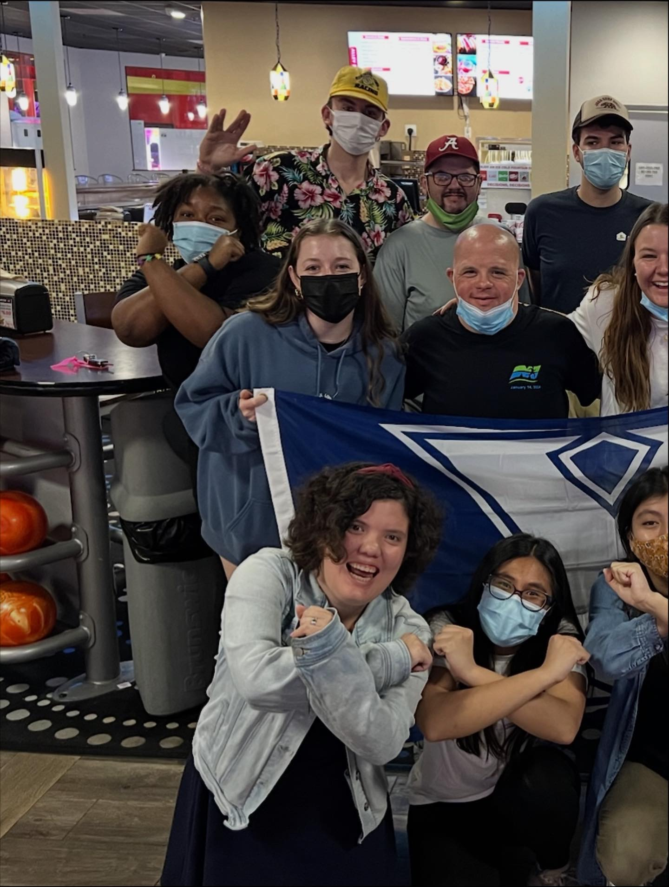
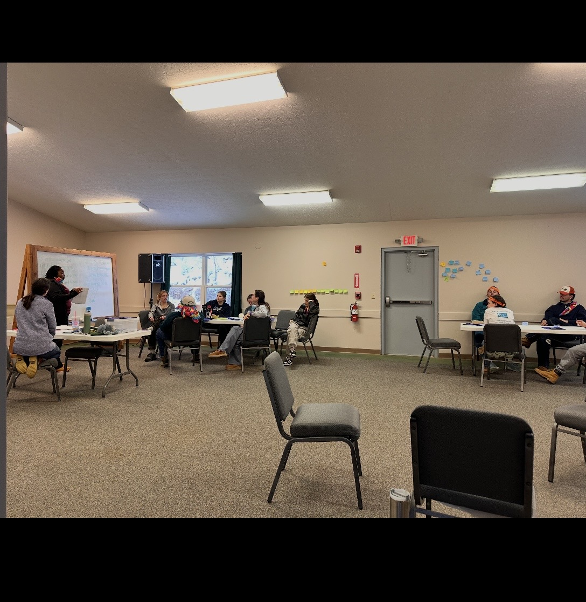
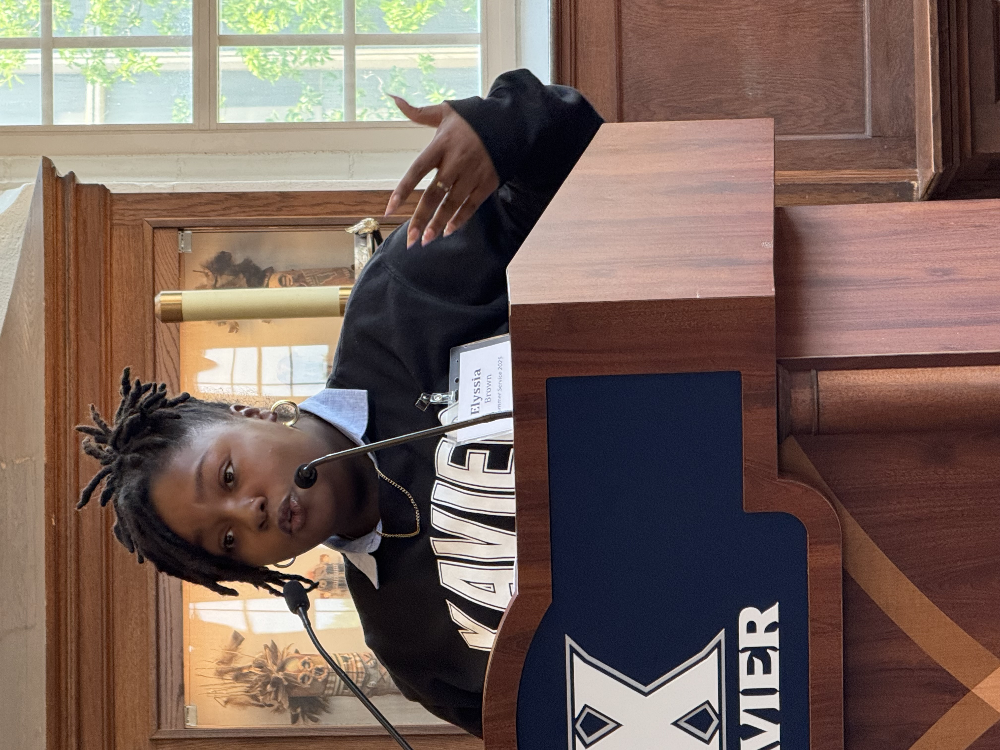
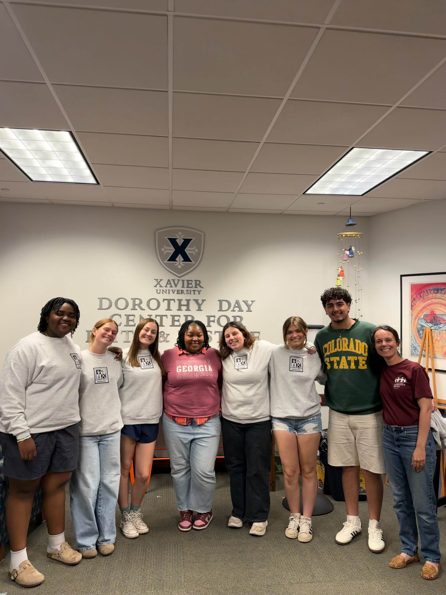

Wassup World!
Biography
Hello! I'm E'lyssia Brown, a third-year Psychology major with a minor in Management. I'm originally from Columbus, Georgia. When I'm not studying, I love playing Just Dance and spending quality time with the people closest to me!
College Expertise
My academic focus blends psychological theory with management principles. I have experience in psychological research methods and am currently exploring how human behavior intersects with organizational structures.
Career Interests
I am passionate about the practical application of psychology in the professional world. My primary career interests lie in Consumer Psychology and Industrial-Organizational (I-O) Psychology.
Photo Gallery
In these images you will see leadership opportunities, service and justice trips, internship graduations, and trust me there are plenty more where that came from!




